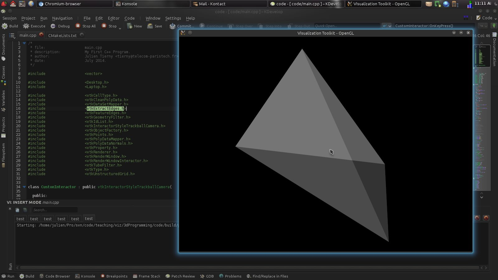
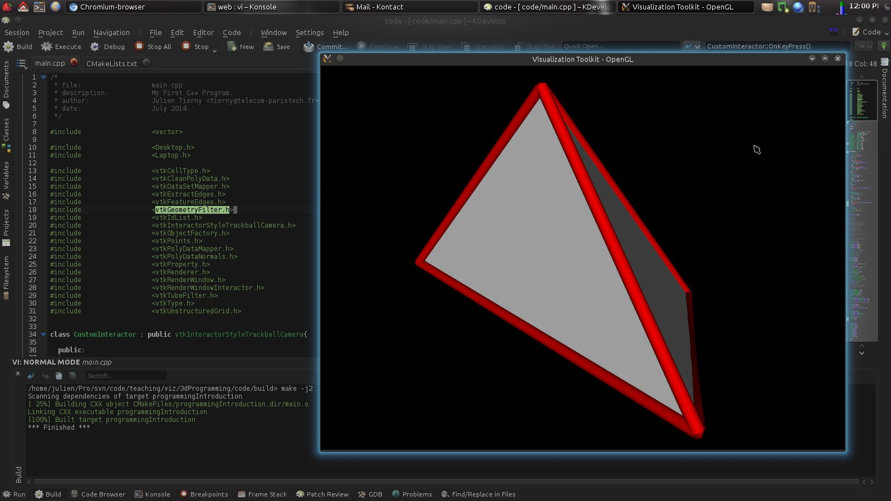

Goals
The goal of this exercise is to experiment with C++ programming... in 3D!A secondary goal is to review the notion of visualization pipeline and to get familiar with the key concepts of the Visualization ToolKit library.
After having completed this exercise, you should know how to program your own, interactive 3D applications.
Software prerequisites
· A recent version of VTK (runtime libraries and headers) should be installed (6.0 or higher);· A recent version of CMake should be installed (2.8 or higher).
The remainder of these exercise instructions assumes that the employed IDE is KDevelop (version 4.5 or higher) under Linux. However, this exercise can be achieved with any IDE under any OS. For non-Linux users, an easy alternative consists in installing a Linux system (such as Kubuntu) within a virtual machine (such as VirtualBox, a readily configured virtual machine is available HERE (md5sum: a59d9cf610ef5ddb7f0f6b338316df0a, password: ttk).
Documentation
· An up-to-date documentation of the VTK library can be found HERE.· A light-speed introduction to C++ programming can be found HERE.
Getting started
Setting up a CMake project
In the following, we will create basic C++ and CMake files and import them in the IDE KDevelop. To do so, we will copy the content of the files displayed in Figure 1 and Figure 2 of the C++ introduction notes.To do so, please use your favorite text editor, or proceed as follows:
· Open the IDE program KDevelop;
· Click on the "Filesystem" tab on the left banner;
· Create a new directory for our exercise: right click in the list, "Create New -> Folder...". Enter this directory (left click on it);
· Create a new *cpp file: "Create New -> Text File..." and name it "main.cpp"; · Create a new file called "CMakeLists.txt";
· Left click the "CMakeLists.txt" entry you created. This file should open in the center panel. Enter the content of Figure 2 in it;
· Load this CMakeLists.txt file in your project: "Project -> Open / Import Project...", explore the file-system to select it (and press the subsequent "OK" and "Finish" buttons that will pop up);
· Enter the content of Figure 1 in your file "main.cpp";
· Click on the "Build" button. At this point, you should be seeing something like this:
If this is the case, congratulations! You just compiled your first C++ program!
·Click on the "Execute" button. A new window will appear. Click on the "Add New..." button and select "Application". Close this window by clicking on its "Ok" button. At this point, if you got it right, you should be seeing something like this:
If this is the case, congratulations! You just wrote, compiled and executed your first C++ program!
C++ Programming for Dummies
Unless you already have some experience with C++ programming, it is highly recommended that you consider the following questions before moving on to the next section. If you are familiar with programming in general but not with C++, you might want to start with question 4.Question 1
In your file "main.cpp", enter the content of Figure 6 (C++ lecture notes). Build your program and execute it.Modify the initial values of the variable "myIntegerVariable" and build/execute again to observe the outcome.
Question 2
In your file "main.cpp", enter the content of Figure 7 (C++ lecture notes). Build your program and execute it.Modify the initial values of the variables A and B and build/execute again to observe the outcome.
Question 3
·In your file "main.cpp", enter the content of Figure 10. Build/execute your code;·Update your file to reproduce the code from Figure 11. Build/execute your code;
·Update your file to reproduce the code from Figure 12. Build/execute your code.
Have you noticed any difference?
Question 4
· Generate the files "Computer.h" and "Computer.cpp" to reproduce the Figures 13, 14 and 15 of the lecture notes. Note that you will need to add the entry "Computer.cpp" right next to the "main.cpp" entry in your "CMakeLists.txt" file. You will also need to insert the following line in the beginning of this file:include_directories(".")
Build/execute your code. Modify the content of the internal variables in the constructor then build/execute again and observe the outcome.
Question 5
· Generate the files "Laptop.h", "Laptop.cpp", "Desktop.h" and "Desktop.cpp" to reproduce the Figures 16, 17 and 18 of the lecture notes. Note that you will need to add the corresponding entries in your "CMakeLists.txt" file. Build/execute your code. Modify the content of the internal variables in the constructor then build/execute again and observe the outcome.Question 6
· Reproduce the code from the Figure 19 of the lecture notes, to get familiar with the STL vector container. Build/execute your code and observe the outcome.Question 7
· Reproduce the code from the Figures 20, 21 and 22 of the lecture notes, and use these functions from the main() function of main.cpp.Correction
The correction for the above questions can be found HERE.A quick introduction to 3D programming with VTK
In this section, we will develop a basic interactive 3D application with VTK. This application will:· Generate a triangulation with two tetrahedra;
· Create a graphical window, attach it to a renderer and an interactor;
· Create a scene object for the triangulation and attach it to the renderer;
· Handle keyboard events to interact with the display properties of the triangulation;
· Create a VTK pipeline to apply a sequence of basic geometry processing tasks on our triangulation prior to its rendering.
In the remainder of this exercise, for simplicity, we will enter all of our C++ code into the function main() of the file "main.cpp".
Question 8
Modify your file "CMakeLists.txt" to make sure that your program builds and links with the VTK library. To do so, borrow inspiration from Figure 3 of the lecture notes.Question 9
To get started, we will have our program generate a basic 3D object (made of 2 tetrahedra) to visualize. First, we will create a set of 3D points, which will be later used by our triangulation. To do so, we will use the VTK class called vtkPoints.VTK uses its own memory allocation and management system. This means that VTK objects cannot be declared directly. Instead, pointers to VTK objects must be declared as follows:
vtkPoints *pointSet_ = NULL;
Later, the memory for this object needs to be dynamically allocated with the following instruction:
pointSet_ = vtkPoints::New();
The above lines declare a pointer to a vtkPoints object (named pointSet_) and allocate the necessary memory for it (with the call to the function New()).
·Warning! Dynamic memory allocation requires some attention. Each object which has been dynamically allocated must be de-allocated when it is no longer used in order to free the corresponding memory. With VTK, for each dynamically allocated object, one typically needs to free its memory at the end of the function where it has been used (here at the end of main()) with the following instruction:
(*pointSet_).Delete();
·Important Note: In the remainder of this exercise, it is recommended to always declare the pointers in the preamble of the file "main.cpp" (after the #include instructions). The corresponding memory allocation should happen within a valid function, such as main().
To refer to the specification of any VTK class that you use from your C++ program, you should include the corresponding header file in the preamble of your source file, with the following pre-processor instruction:
#include <vtkPoints.h>
Declare and allocate a vtkPoints from your C++ code (and do not forget to delete the corresponding memory after usage).
Question 10
We will now insert 3D points in this object. In particular, we will consider the following points for instance:· (0, 0, 1)
· (0, 1, 0)
· (1, 0, 0)
· (0, 0, 0)
· (0, 0, -1)
To add these points to the vtkPoints object, we will use its function InsertNextPoint() for each of them. Please refer to the documentation of this class to understand how to use this function. Note that this function will return a unique integer identifier that can be used later, to refer to a specific point among the set. Go ahead and insert these points in the point set.
Question 11
We will now create a list of point identifiers which describe a tetrahedron. This list of point identifiers will be used to add this tetrahedron to our triangulation.Include the necessary header file, declare and allocate a vtkIdList object (and do not forget to delete the corresponding memory at the end of the program). This object is meant to store the identifiers of the points we created for further usage. For the first 4 points of the previous question, insert their corresponding identifier in the list with the function InsertNextId() (see the class documentation).
Question 12
We will now create a data-structure to represent triangulations (sets of simplicies, such as tetrahedra).Include the necessary header file, declare and allocate a vtkUnstructuredGrid object (and do not forget to delete the corresponding memory at the end of the program). This object is meant to store a triangulation (described in the domain representations class).
·Link this object to the 3D point set with the function SetPoints() of the vtkUnstructuredGrid class.
·Insert a cell of type VTK_TETRA in this data-structure with its function InsertNextCell() (see the class documentation).
Build and execute your program. If you got it right, you just created a triangulation made of one tetrahedron. Congrats!
Question 13
Create a second vtkIdList object which contains the identifiers of the last point and the first 3 points of the point set. Insert this tetrahedron in the vtkUnstructuredGrid object.Question 14
We will now create an empty graphical window, which will later contain a rendering of our triangulation.Include the necessary header file, declare and allocate a vtkRenderWindow object (and do not forget to delete the corresponding memory at the end of the program). This object is meant to represent a graphical window in which a renderer will later be inserted. Before the deletion of the corresponding memory, call the function Render() of this object. Build and execute your code. What do you observe?
Question 15
We will now pull the rest of the VTK machinery to insert a representation of our triangulation within the visualization. To do so, we will need to include the necessary header files, declare and allocate the following objects:·vtkRenderer (to perform the actual rendering tasks within the graphical window);
·vtkDataSetMapper (to convert our triangulation into a set of graphics primitives that are "renderable");
·vtkActor (to represent and interact with our triangulation in our visualization).
· Link the triangulation to the vtkDataSetMapper object with its function SetInputData() (see the class documentation).
· Link the mapper to the vtkActor object with its function SetMapper() (see the class documentation).
· Link the actor to the vtkRenderer object with its function AddActor() (see the class documentation).
· Link the renderer to the vtkRenderWindow object with its function AddRenderer() (see the class documentation).
Build/execute your code. What do you observe?
Making your 3D application interactive
Question 16
We will now pull the necessary VTK machinery to interact with our 3D visualization. Include the necessary header file, declare and allocate a vtkRenderWindowInteractor object (and do not forget to delete the corresponding memory at the end of the program). This object is meant to provide interaction features.· Link the render window with the vtkRenderWindowInteractor with its function SetRenderWindow() (see the class documentation).
· Right after the call to the Render() function, call the function Start() on the interactor.
Build/execute your code. What do you observe?
If you got it right, you should be visualizing something like this:
Question 17
The default interactor type in VTK is not necessarily the most intuitive to use. Here, we will pull the necessary machinery to use a different interactor style. Include the necessary header file, declare and allocate a vtkInteractorStyleTrackballCamera object (and do not forget to delete the corresponding memory at the end of the program). This object is meant to provide trackball-type interactions.· Link this interactor style with the interactor with its function SetInteractorStyle() (class documentation).
Build/execute your code. What do you observe?
Question 18
In the following, we will try to interpret keyboard events to interact with keystrokes on our visualization. By default, VTK interactors have their own handling of keyboard events. In our case, we would like to re-define/extend them.What object oriented programming concept could we use to achieve this?
Question 19
Create a class CustomInteractor that inherits from vtkInteractorStyleTrackballCamera. The only two (public) functions that need to be re-declared are:static CustomInteractor* New();
void OnKeyPress();
In the preamble of your C++ file (right before the main() function), insert the following line to automatically pull the memory management machinery of VTK:
vtkStandardNewMacro(CustomInteractor);
Now implement the function void CustomInteractor::OnKeyPress() as follows:
void CustomInteractor::OnKeyPress(){
string key = Interactor->GetKeySym();
// Here we will insert our event processing (TODO)
// Now we will refresh the display
// Assuming your vtkRenderWindow object is named renderWindow_:
renderWindow_->Render();
vtkInteractorStyle::OnKeyPress();
}
If the user hits a key, this function will be called and the string object key will contain the actual value of the key that has been pressed.
Question 20
If the user pressed the key "t", set the surface of our triangulation transparent. This can be done by calling the following function:GetProperty()->SetOpacity(0.5)
on the actor.
Build/execute your code. What do you observe?
If you got it right, you should be visualizing something like this:

Question 21
Declare a boolean variable (source file preamble) named "isTransparent_" that is set to true if the object is transparent and to false otherwise. Use this boolean variable to roll back the transparency if the user presses "t" several times (this can be achieved by setting the opacity to 1).Build/execute your code. What do you observe?
Question 22
Modify your code, such that only the edges of our triangulation are displayed if the user hits the key "m" (for mesh). Such an effect can be achieved by calling the following function:GetProperty()->SetRepresentationToWireframe()
on the actor.
Build/execute your code. What do you observe?
If you got it right, you should be visualizing something like this:
Have a look at the property class documentation to see what function could be used to revert that effect.
Setting up a visualization pipeline with VTK
VTK implements a visualization pipeline philosophy. In this paradigm, a visualization is obtained by applying a sequence of geometry processing tasks on one or several data-sets. In VTK, geometry processing tasks are materialized by Filters. Each filter can be seen as a black box, which takes some data on its input and delivers some data on its output.To connect two filters together in a sequence, one needs to plug the output port of the first filter to the input port of the second one. For instance, this can be done as follows:
mySecondFilter->SetInputConnection(myFirstFilter->GetOutputPort());
A set of filters sequentially linked together then forms a visualization pipeline. The extremities of the pipeline should be handled specifically:
·The first filter of the pipeline should obtain its input data from a source (in our exercise from some input data with the function SetInputData());
·The last filter should deliver its data to a consumer (in our example a mapper).
The VTK visualization pipeline uses an on-demand data-driven execution scheduling strategy. This means that all the filters can be plugged together without being executed. The entire pipeline will be executed (or updated with partial computations) only when the calling program will ask for its output.
Question 23
In the following questions, we will deploy a simple VTK pipeline that extracts the salient edges of our 3D object and represent them with cylinders in the visualization. The filter in charge of this extraction in VTK is called vtkFeatureEdges . This filter takes as an input a surface representation of the data along with its normals. To obtain a surface representation out of our tetrahedral mesh, one needs to use the filter vtkGeometryFilter. From there, to obtain the surface with its normals, one needs to use the filter vtkPolyDataNormals.Include the necessary header files, declare and allocate the following objects:
·vtkGeometryFilter;
·vtkPolyDataNormals;
·vtkFeatureEdges;
·vtkTubeFilter.
Connect these filters together to form a visualization pipeline in the function main(). To get a nicer visualization, you may want to adjust some properties of the tube filters by calling the following functions on the tube filter:
SetRadius(0.025);
SetNumberOfSides(10);
Question 24
To insert the result of this pipeline in our visualization, one needs to declare a new actor as well as new mapper. Since the output of the vtkTubeFilter is a surface, declare and allocate a vtkPolyDataMapper. Also, declare and allocate a new vtkActor. Finally, in the function main(), link this new actor to the renderer (as done in a previous question).Question 25
We will now trigger the execution of our visualization pipeline if the user pressed the key "g" (as in "go!").In the function CustomInteractor::OnKeyPress(), modify your code such that, if the user pressed the "g" key, our vtkPolyDataMapper object gets link to our tube actor (with the function SetMapper()).
Build/execute your code. What do you observe?
If you got it right, you should be visualizing something like this:

At the beginning of the function CustomInteractor::OnKeyPressed(), insert the following instruction (assuming your tube filter is named tubeFilter_):
cout << "Tubes have now " << tubeFilter_->GetOutput()->GetNumberOfPoints() << " points. " <<endl;
Copy-paste this same line of code at the end of the function CustomInteractor::OnKeyPressed(), right after the call to the Render() function.
Build/execute your code. What do you observe?
Acknowledgments
Some of the questions of this exercise are inspired or adapted from an exercise originally written by Thierry Carrard. Thanks Thierry!
Updated on December 13th, 2017.